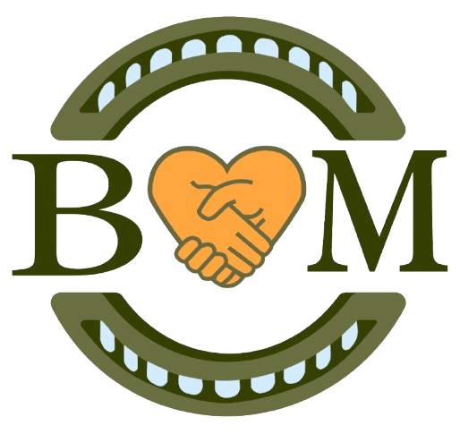

Opportunities and event calendar
Publish upcoming workshops, volunteer openings, online meetings, training sessions, and deadlines so every participating school can join through the same clear process.

Bridge MakersOrganization channels
Use this page for the organization's social links, videos, partner updates, student project reflections, and announcements shared across participating schools.
Follow Bridge Makers
Replace these placeholder links with your real organization accounts when they are ready.
Across schools
Shared channels can help students from different schools plan responsibly, exchange ideas, and learn from community partners while keeping participation organized and supervised.
Publish upcoming workshops, volunteer openings, online meetings, training sessions, and deadlines so every participating school can join through the same clear process.
Feature reflections and project updates from different schools, while protecting participants' privacy and receiving permission before publishing community stories or images.
Short videos can show workshops, product preparation, interviews, and student reflection moments.
Announce new handmade products and connect every release to the story behind the item.
Share what partner NGOs need, what students are working on, and how supporters can help next.
Introduce participating school teams, share joint opportunities, and invite more students and teacher advisers to take part.